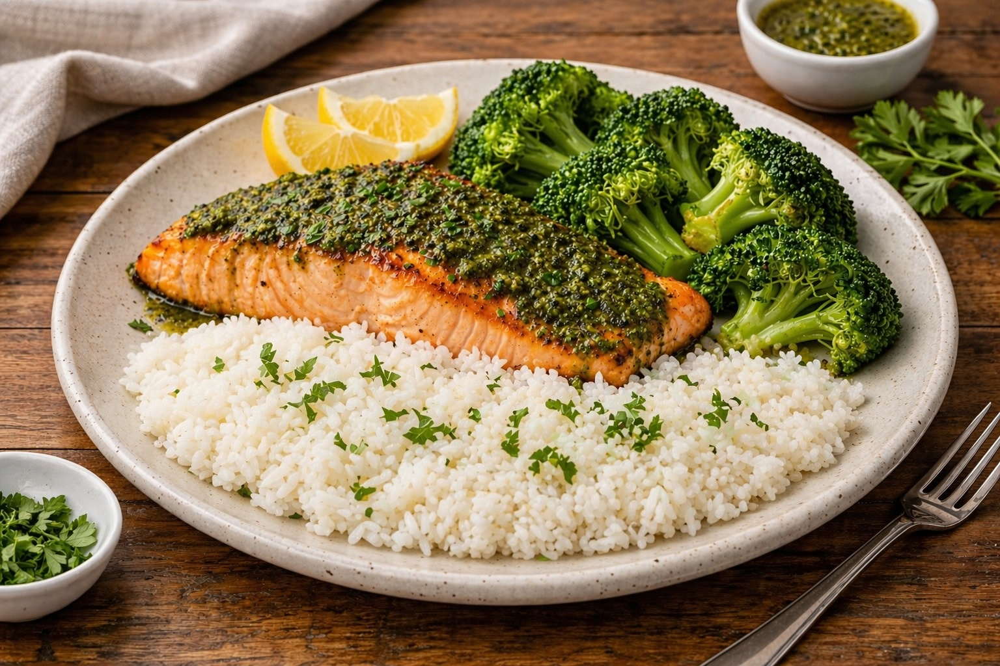

Whole Foods Recipes: Salmon with Rice or Quinoa
Last updated: 2026

A simple, repeatable salmon meal built around a clean base. Rice gives comfort, quinoa adds variety, and pesto added at the end creates a result that feels far more complex than the effort required.
- Pan or cast iron works best — better control and less risk of drying out the salmon.
- Pesto goes on at the end — finishing after cooking keeps the flavor bright and fresh.
- Rice or quinoa both work — one meal, two reliable bases.
- Simple can still feel high quality — this meal can reach restaurant-level results with minimal effort.
Purpose
A simple, repeatable meal built around salmon and a clean base, designed to provide a reliable default when you want something nutritious without overthinking.
Servings
- About 2 servings
Ingredients
- 2 salmon fillets
- 1 cup cooked rice or 1 cup cooked quinoa
- 2–4 tablespoons pesto
- 1 tablespoon olive oil or avocado oil
- Salt, to taste
Optional: lemon at the end, extra olive oil, simple vegetables on the side.
Method
- Cook the base. Prepare rice or quinoa first so it is ready when the salmon finishes.
- Heat the pan. Use a pan or cast iron over medium heat with a small amount of oil.
- Season the salmon. Lightly salt both sides.
- Cook the salmon. Cook until the outside is set and the center is just cooked through.
- Add butter and baste. Near the end of cooking, add a small amount of butter and spoon it over the salmon for added richness and flavor.
- Plate the base. Add rice or quinoa to the bowl or plate.
- Finish with pesto. Add pesto after cooking, letting the residual heat warm it slightly instead of cooking it directly.
Practical notes
- Pan over oven: oven cooking can dry the salmon more easily. Pan cooking gives faster feedback and better control.
- Butter at the end: adding butter near the end improves flavor without burning it.
- Slightly under is better than over: salmon keeps cooking a bit after it leaves the pan.
- Pesto timing matters: adding pesto at the end preserves flavor better than cooking it.
- Rice vs quinoa: rice feels softer and more comforting; quinoa adds a lighter, nuttier variation.
- Optional broccoli: cook simple vegetables like broccoli directly with the quinoa near the end to reduce steps and cleanup.
Why this works
This meal works because each part has a clear role. Salmon provides protein and richness, rice or quinoa provides structure, and pesto adds fast flavor without extra complexity. The result is simple, stable, and easy to repeat.
Real-world result
In practice, this meal can feel restaurant-level with very little effort. The biggest difference comes from keeping the salmon moist and adding pesto only after cooking.
Next steps
Continue with more Whole Food Cooking.
This article focuses on practical cooking with simple ingredients, not medical advice.